Kaminoyama
Kaminoyama · Yamagata
Kaminoyama
Highlighted on the Yamagata map.
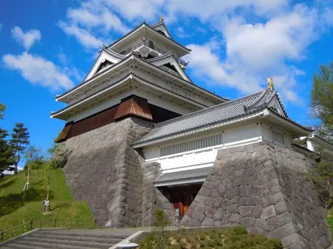
Stay
名月荘
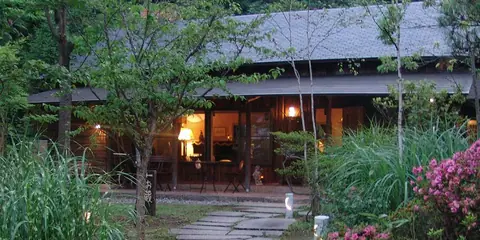
Meigetsu Sou
Lodge in Kaminoyama, Yamagata.
かみのやま温泉 寒河江屋旅館
Kaminoyama Onsen Sagae Ya Ryokan
Ryokan inn in Kaminoyama, Yamagata.
別館 ふじや旅館
Bekkan Fujiya Ryokan
Ryokan inn in Kaminoyama, Yamagata.
かみのやま温泉 名月荘
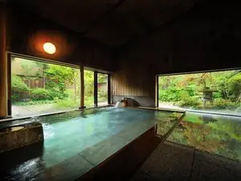
Kaminoyama Onsen Meigetsu Sou
Onsen lodging in Kaminoyama, Yamagata.
かみのやま温泉 はたや旅館
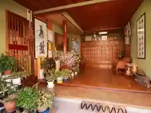
Kaminoyama Onsen Hataya Ryokan
Ryokan inn in Kaminoyama, Yamagata.
ホテル菊屋
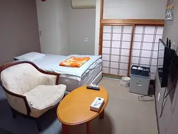
Hoteru Kikuya
Hotel in Kaminoyama, Yamagata.
Dining
丹野こんにゃく番所
Tanno Konnyaku Bansho
Japanese restaurant in Kaminoyama, Yamagata.
山形プリン
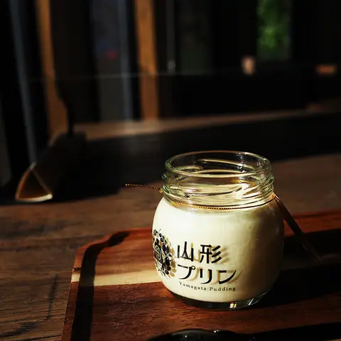
Yamagata Purin
Sweets shop in Kaminoyama, Yamagata.
キセン
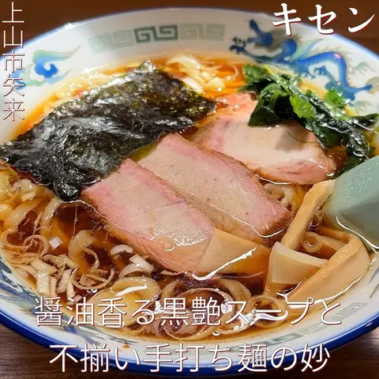
Kisen
Ramen shop in Kaminoyama, Yamagata.
HATAKE STYLE 上山本店
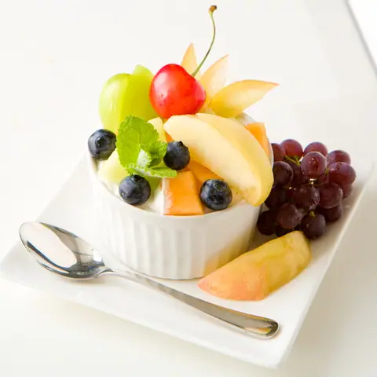
Hatake Style Ueyama Honten
Café in Kaminoyama, Yamagata.
湯蕎庵 味津肥盧
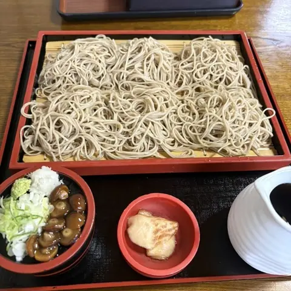
Yu Kyou Iori Aji Tsu Koe Ro
Soba restaurant in Kaminoyama, Yamagata.
原口そば
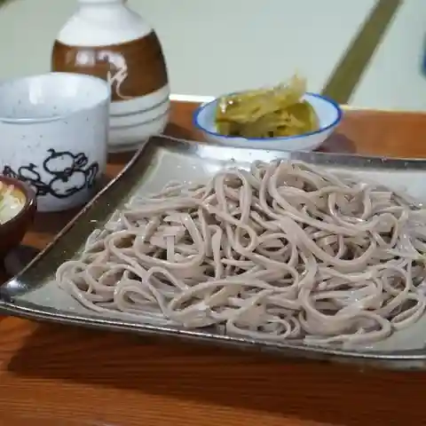
Haraguchi Soba
Soba restaurant in Kaminoyama, Yamagata.
中條屋
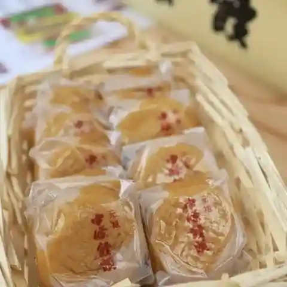
Chuujou Ya
Japanese sweets shop in Kaminoyama, Yamagata.
Ora da cacao & chou
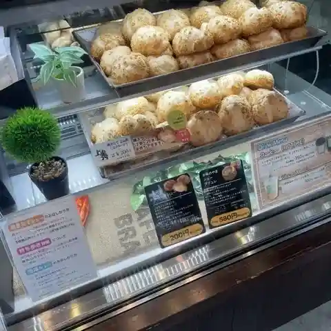
Ora Da Cacao & Chou
Sweets shop in Kaminoyama, Yamagata.
さぶちゃんラーメン
Sabuchan Raamen
Ramen shop in Kaminoyama, Yamagata.
たから亭
Takara Tei
Soba restaurant in Kaminoyama, Yamagata.
熱烈中華 ○武
Netsuretsu Chuuka ○ Takeshi
Chinese restaurant in Kaminoyama, Yamagata.
蕎麦処 一休
Sobadokoro Ikkyuu
Soba restaurant in Kaminoyama, Yamagata.
中国料理 新華楼
Chuugokuryouri Shinka Rou
Chinese restaurant in Kaminoyama, Yamagata.
厩戸
Umayado
Shokudo diner in Kaminoyama, Yamagata.
harappa
Harappa
Soba restaurant in Kaminoyama, Yamagata.
そば処 やぶいち
Soba Tokoro Yabuichi
Soba restaurant in Kaminoyama, Yamagata.
遊行庵
Yugyou Iori
Soba restaurant in Kaminoyama, Yamagata.
手打そば久左ェ門
Teuchi Soba Kyuu Hidari E Mon
Soba restaurant in Kaminoyama, Yamagata.
日本の宿 古窯
Nippon No Yado Koyou
Hotel restaurant in Kaminoyama, Yamagata.
焼肉 曉
Yakiniku Akatsuki
Yakiniku (grilled meat) restaurant in Kaminoyama, Yamagata.
レストランイビサ
Resutoran'Ibisa
Yoshoku (Western-style) restaurant in Kaminoyama, Yamagata.
蔵王ライザワールド レストラン
Zaou Raizawaarudo Resutoran
Shokudo diner in Kaminoyama, Yamagata.
みそのそばや
Misonosobaya
Soba restaurant in Kaminoyama, Yamagata.
Sights
Kaminoyama Onsen
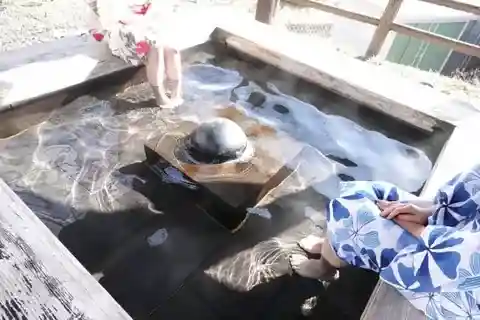
https://yamagatakanko.com/en/attractions/detail_2533.html
Zao Echo Line
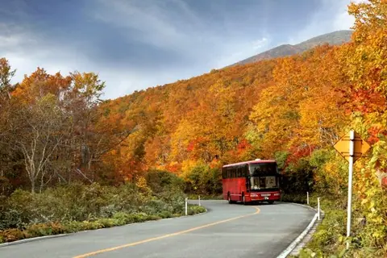
https://yamagatakanko.com/en/attractions/detail_7505.html
Kaminoyama Castle Local Museum
Kaminoyama Castle, also called Tsukioka Castle, is said to have been built in 1535. It was the southernmost stronghold of the Mogami clan and saw fighting with the Date and Uesugi of Yonezawa; today it houses the local history museum.
Takeda Winery
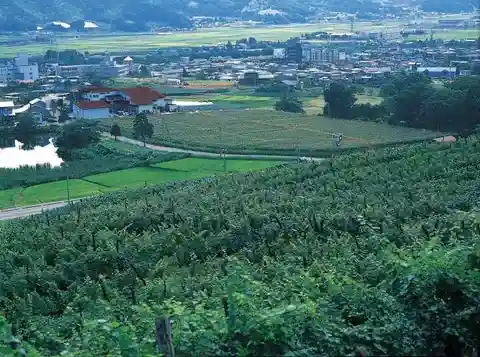
A winery whose 15-hectare south-facing vineyard is farmed with reduced pesticides and no chemical fertiliser, following natural cycles. Its wines are made with long experience and high technical skill.
Takahashi Fruits Land HATAKE STYLE
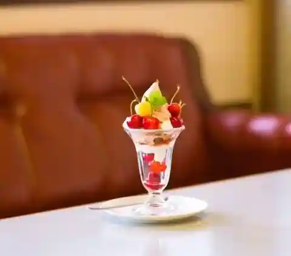
An orchard growing seasonal fruit 100% organically, with greenhouse cherries for early cherry picking. The adjoining HATAKE STYLE café serves parfaits, sundaes and soft-serve.
Zao Bodaira Highlands
https://yamagatakanko.com/en/attractions/detail_346.html
Lina World
One of the largest amusement parks in Tohoku, about 10 minutes by car from Kaminoyama Onsen and 20 minutes from Zao Onsen, with thrill rides such as a log flume and pirate ship as well as Sanrio-themed attractions.
Narage-juku (Ushu Kaido Post Town)
A post town on the Ushu Kaido that once bustled with daimyo processions, with a main inn, sub-inn and lodging houses. Old houses and stone bridges line the river, and some of the old houses are open to visitors.